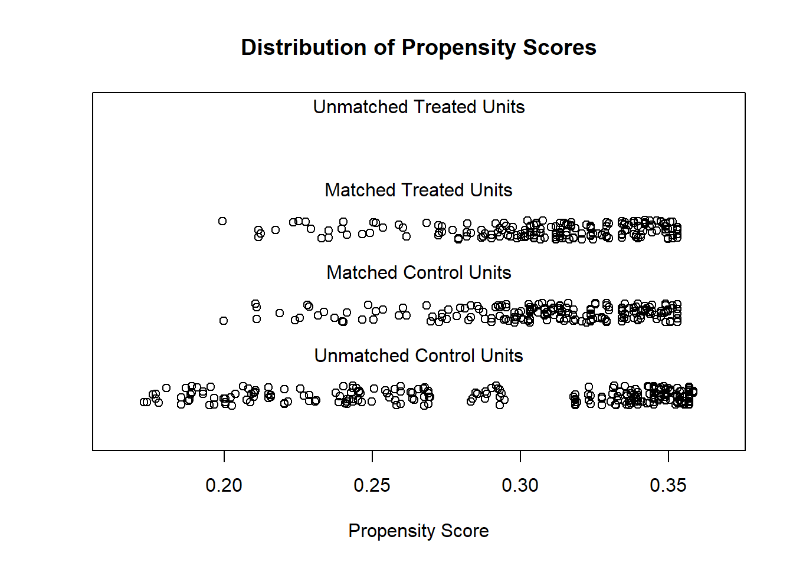
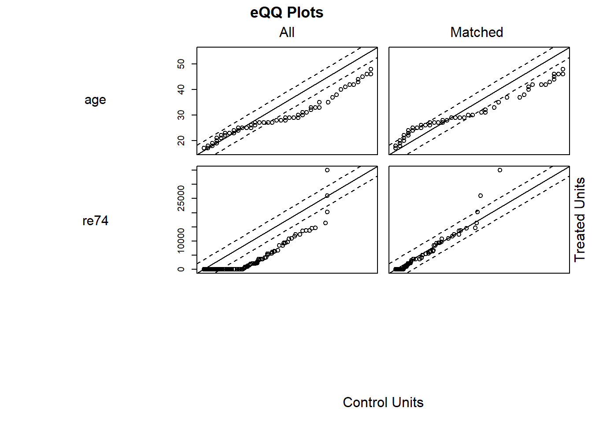

35.9 Selection on Observables
In observational studies, treatment assignment is typically not randomized. This poses a challenge when estimating causal effects, as treated and control groups may differ systematically. A central assumption that allows us to estimate causal effects from such data is selection on observables, also known as unconfoundedness or conditional independence.
Suppose we observe a binary treatment indicator \(T_i \in \{0, 1\}\) and an outcome \(Y_i\). Each unit \(i\) has two potential outcomes:
- \(Y_i(1)\): outcome if treated
- \(Y_i(0)\): outcome if untreated
However, only one of these outcomes is observed for each unit. The average treatment effect on the treated (ATT) is:
\[ \text{ATT} = \mathbb{E}[Y(1) - Y(0) \mid T = 1] \]
To identify this from data, we invoke the conditional independence assumption:
\[ (Y(0), Y(1)) \perp T \mid X \]
This assumption means that after controlling for covariates \(X\), treatment is as good as randomly assigned. A secondary assumption is overlap:
\[ 0 < \mathbb{P}(T = 1 \mid X = x) < 1 \quad \text{for all } x \]
This ensures that for every covariate profile, there is a positive probability of being both treated and untreated.
Matching attempts to approximate the conditions of a randomized experiment by creating a comparison group that is similar to the treated group in terms of observed covariates. Instead of relying solely on model-based adjustment (e.g., regression), matching balances the covariate distribution across treatment groups before estimation.
35.9.1 Matching with MatchIt
We demonstrate the matching procedure using the lalonde dataset, a classic example in the causal inference literature, which investigates the effect of job training on subsequent earnings.
We focus on estimating the effect of the treatment (treat) on earnings in 1978 (re78), conditional on covariates.
Step 1: Planning the Analysis
Before conducting matching, several strategic decisions must be made:
Estimand: Do you want ATT (effect on treated), ATE (effect in population), or ATC (effect on controls)? Matching typically targets the ATT.
Covariate Selection: Only include pre-treatment variables that are potential confounders—i.e., affect both the treatment assignment and the outcome (Austin 2011; T. J. VanderWeele 2019).
Distance Measure: Choose how to quantify similarity between units (e.g., propensity score, Mahalanobis distance).
Matching Method: Determine the method (e.g., nearest neighbor, full matching, genetic matching).
For our demonstration, we focus on ATT using propensity score matching.
Step 2: Assessing Initial Imbalance
We first assess imbalance between treatment and control groups before matching.
# Estimate propensity scores with logistic regression
m.out0 <- matchit(
treat ~ age + educ + race + married + nodegree + re74 + re75,
data = MatchIt::lalonde,
method = NULL, # no matching, only estimates propensity scores
distance = "glm"
)
# Summary of balance statistics before matching
summary(m.out0)
#>
#> Call:
#> matchit(formula = treat ~ age + educ + race + married + nodegree +
#> re74 + re75, data = MatchIt::lalonde, method = NULL, distance = "glm")
#>
#> Summary of Balance for All Data:
#> Means Treated Means Control Std. Mean Diff. Var. Ratio eCDF Mean
#> distance 0.5774 0.1822 1.7941 0.9211 0.3774
#> age 25.8162 28.0303 -0.3094 0.4400 0.0813
#> educ 10.3459 10.2354 0.0550 0.4959 0.0347
#> raceblack 0.8432 0.2028 1.7615 . 0.6404
#> racehispan 0.0595 0.1422 -0.3498 . 0.0827
#> racewhite 0.0973 0.6550 -1.8819 . 0.5577
#> married 0.1892 0.5128 -0.8263 . 0.3236
#> nodegree 0.7081 0.5967 0.2450 . 0.1114
#> re74 2095.5737 5619.2365 -0.7211 0.5181 0.2248
#> re75 1532.0553 2466.4844 -0.2903 0.9563 0.1342
#> eCDF Max
#> distance 0.6444
#> age 0.1577
#> educ 0.1114
#> raceblack 0.6404
#> racehispan 0.0827
#> racewhite 0.5577
#> married 0.3236
#> nodegree 0.1114
#> re74 0.4470
#> re75 0.2876
#>
#> Sample Sizes:
#> Control Treated
#> All 429 185
#> Matched 429 185
#> Unmatched 0 0
#> Discarded 0 0This summary provides:
Standardized mean differences
Variance ratios
Propensity score distributions
These diagnostics help us understand the extent of covariate imbalance.
Step 3: Implementing Matching
- Nearest Neighbor Matching (1:1 without Replacement)
m.out1 <- matchit(
treat ~ age + educ + race + married + nodegree + re74 + re75,
data = MatchIt::lalonde,
method = "nearest",
distance = "glm"
)Matching is based on estimated propensity scores. Each treated unit is matched to the closest control unit.
Assess Balance After Matching
summary(m.out1, un = FALSE) # only show post-matching stats
#>
#> Call:
#> matchit(formula = treat ~ age + educ + race + married + nodegree +
#> re74 + re75, data = MatchIt::lalonde, method = "nearest",
#> distance = "glm")
#>
#> Summary of Balance for Matched Data:
#> Means Treated Means Control Std. Mean Diff. Var. Ratio eCDF Mean
#> distance 0.5774 0.3629 0.9739 0.7566 0.1321
#> age 25.8162 25.3027 0.0718 0.4568 0.0847
#> educ 10.3459 10.6054 -0.1290 0.5721 0.0239
#> raceblack 0.8432 0.4703 1.0259 . 0.3730
#> racehispan 0.0595 0.2162 -0.6629 . 0.1568
#> racewhite 0.0973 0.3135 -0.7296 . 0.2162
#> married 0.1892 0.2108 -0.0552 . 0.0216
#> nodegree 0.7081 0.6378 0.1546 . 0.0703
#> re74 2095.5737 2342.1076 -0.0505 1.3289 0.0469
#> re75 1532.0553 1614.7451 -0.0257 1.4956 0.0452
#> eCDF Max Std. Pair Dist.
#> distance 0.4216 0.9740
#> age 0.2541 1.3938
#> educ 0.0757 1.2474
#> raceblack 0.3730 1.0259
#> racehispan 0.1568 1.0743
#> racewhite 0.2162 0.8390
#> married 0.0216 0.8281
#> nodegree 0.0703 1.0106
#> re74 0.2757 0.7965
#> re75 0.2054 0.7381
#>
#> Sample Sizes:
#> Control Treated
#> All 429 185
#> Matched 185 185
#> Unmatched 244 0
#> Discarded 0 0
# Visual diagnostic: jitter plot of propensity scores
plot(m.out1, type = "jitter", interactive = FALSE)

Interpretation: Good matches will show overlapping distributions of covariates across groups, and standardized differences should be below 0.1 in absolute value.
- Full Matching
Allows many-to-one or one-to-many matches, minimizing overall distance.
m.out2 <- matchit(
treat ~ age + educ + race + married + nodegree + re74 + re75,
data = MatchIt::lalonde,
method = "full",
distance = "glm",
link = "probit"
)
summary(m.out2, un = FALSE)
#>
#> Call:
#> matchit(formula = treat ~ age + educ + race + married + nodegree +
#> re74 + re75, data = MatchIt::lalonde, method = "full", distance = "glm",
#> link = "probit")
#>
#> Summary of Balance for Matched Data:
#> Means Treated Means Control Std. Mean Diff. Var. Ratio eCDF Mean
#> distance 0.5773 0.5764 0.0045 0.9949 0.0043
#> age 25.8162 25.5347 0.0393 0.4790 0.0787
#> educ 10.3459 10.5381 -0.0956 0.6192 0.0253
#> raceblack 0.8432 0.8389 0.0119 . 0.0043
#> racehispan 0.0595 0.0492 0.0435 . 0.0103
#> racewhite 0.0973 0.1119 -0.0493 . 0.0146
#> married 0.1892 0.1633 0.0660 . 0.0259
#> nodegree 0.7081 0.6577 0.1110 . 0.0504
#> re74 2095.5737 2100.2150 -0.0009 1.3467 0.0314
#> re75 1532.0553 1561.4420 -0.0091 1.5906 0.0536
#> eCDF Max Std. Pair Dist.
#> distance 0.0486 0.0198
#> age 0.2742 1.2843
#> educ 0.0730 1.2179
#> raceblack 0.0043 0.0162
#> racehispan 0.0103 0.4412
#> racewhite 0.0146 0.3454
#> married 0.0259 0.4473
#> nodegree 0.0504 0.9872
#> re74 0.1881 0.8387
#> re75 0.1984 0.8240
#>
#> Sample Sizes:
#> Control Treated
#> All 429. 185
#> Matched (ESS) 50.76 185
#> Matched 429. 185
#> Unmatched 0. 0
#> Discarded 0. 0- Exact Matching
Only matches units with exactly the same covariate values (usually categorical):
- Optimal Matching
Minimizes the total distance between matched units across the sample.
m.out4 <- matchit(
treat ~ age + educ + re74 + re75,
data = MatchIt::lalonde,
method = "optimal",
ratio = 2
)- Genetic Matching
Searches over weights assigned to covariates to optimize balance.
Step 4: Estimating Treatment Effects
Once matching is complete, we use the matched data to estimate treatment effects.
library(lmtest)
library(sandwich)
# Extract matched data
matched_data <- match.data(m.out1)
# Estimate ATT with robust standard errors
model <- lm(re78 ~ treat + age + educ + race + re74 + re75,
data = matched_data,
weights = weights)
coeftest(model, vcov. = vcovCL, cluster = ~subclass)
#>
#> t test of coefficients:
#>
#> Estimate Std. Error t value Pr(>|t|)
#> (Intercept) -437.664937 1912.759171 -0.2288 0.819143
#> treat 1398.134870 723.745751 1.9318 0.054164 .
#> age -0.343085 39.256789 -0.0087 0.993032
#> educ 470.767350 147.892765 3.1832 0.001583 **
#> racehispan 1518.303924 1035.083141 1.4668 0.143287
#> racewhite 557.295853 897.121013 0.6212 0.534856
#> re74 0.017244 0.166298 0.1037 0.917470
#> re75 0.226076 0.165722 1.3642 0.173357
#> ---
#> Signif. codes: 0 '***' 0.001 '**' 0.01 '*' 0.05 '.' 0.1 ' ' 1The coefficient on treat is our estimate of the ATT. The weights and subclass clustering account for the matched design.
35.9.2 Reporting Standards
To ensure transparency and reproducibility, always report the following:
Matching method (e.g., nearest neighbor, genetic)
Distance metric (e.g., propensity score via logistic regression)
Covariates matched on and justification for their inclusion
Balance statistics (e.g., standardized mean differences before/after)
Sample sizes: total, matched, unmatched, discarded
Estimation model: whether treatment effects are estimated using regression adjustment, with or without weights
Assumptions: especially unconfoundedness and overlap
35.9.3 Optimization-Based Matching via designmatch
For more advanced applications, the designmatch package provides matching methods based on combinatorial optimization.
Notable methods:
distmatch(): Distance-based matching with custom constraintsbmatch(): Bipartite matching using linear programmingcardmatch(): Cardinality matching for maximum matched sample size with balance constraintsprofmatch(): Profile matching for stratified treatment allocationnmatch(): Non-bipartite matching (e.g., in interference settings)
35.9.4 MatchingFrontier
As mentioned in MatchIt, you have to make trade-off (also known as bias-variance trade-off) between balance and sample size. An automated procedure to optimize this trade-off is implemented in MatchingFrontier (G. King, Lucas, and Nielsen 2017), which solves this joint optimization problem.
Following MatchingFrontier guide
# library(devtools)
# install_github('ChristopherLucas/MatchingFrontier')
library(MatchingFrontier)
data("lalonde", package = "MatchIt")
# choose var to match on
match.on <-
colnames(lalonde)[!(colnames(lalonde) %in% c('re78', 'treat'))]
match.on
# Mahanlanobis frontier (default)
mahal.frontier <-
makeFrontier(
dataset = lalonde,
treatment = "treat",
match.on = match.on
)
mahal.frontier
# L1 frontier
L1.frontier <-
makeFrontier(
dataset = lalonde,
treatment = 'treat',
match.on = match.on,
QOI = 'SATT',
metric = 'L1',
ratio = 'fixed'
)
L1.frontier
# estimate effects along the frontier
# Set base form
my.form <-
as.formula(re78 ~ treat + age + black + education
+ hispanic + married + nodegree + re74 + re75)
# Estimate effects for the mahalanobis frontier
mahal.estimates <-
estimateEffects(
mahal.frontier,
're78 ~ treat',
mod.dependence.formula = my.form,
continuous.vars = c('age', 'education', 're74', 're75'),
prop.estimated = .1,
means.as.cutpoints = TRUE
)
# Estimate effects for the L1 frontier
L1.estimates <-
estimateEffects(
L1.frontier,
're78 ~ treat',
mod.dependence.formula = my.form,
continuous.vars = c('age', 'education', 're74', 're75'),
prop.estimated = .1,
means.as.cutpoints = TRUE
)
# Plot covariates means
# plotPrunedMeans()
# Plot estimates (deprecated)
# plotEstimates(
# L1.estimates,
# ylim = c(-10000, 3000),
# cex.lab = 1.4,
# cex.axis = 1.4,
# panel.first = grid(NULL, NULL, lwd = 2,)
# )
# Plot estimates
plotMeans(L1.frontier)
# parallel plot
parallelPlot(
L1.frontier,
N = 400,
variables = c('age', 're74', 're75', 'black'),
treated.col = 'blue',
control.col = 'gray'
)
# export matched dataset
# take 400 units
matched.data <- generateDataset(L1.frontier, N = 400) 35.9.5 Propensity Scores
Propensity score methods are widely used for estimating causal effects in observational studies, where random assignment to treatment and control groups is not feasible. The core idea is to mimic a randomized experiment by adjusting for confounding variables that predict treatment assignment. Formally, the propensity score is defined as the probability of assignment to treatment conditional on observed covariates (Rosenbaum and Rubin 1983, 1985):
\[ e_i(X_i) = P(T_i = 1 \mid X_i) \]
where:
- \(T_i \in \{0, 1\}\) is the binary treatment indicator for unit \(i\),
- \(X_i\) is a vector of observed pre-treatment covariates for unit \(i\).
The key insight from Rosenbaum and Rubin (1983) is that conditioning on the propensity score is sufficient to remove bias due to confounding from observed covariates, under certain assumptions.
35.9.5.1 Assumptions for Identification
To identify causal effects using propensity scores, the following assumptions must hold:
- Unconfoundedness / Conditional Independence Assumption (CIA):
\[ (Y_i(0), Y_i(1)) \perp T_i \mid X_i \]
- Positivity (Overlap):
\[ 0 < P(T_i = 1 \mid X_i) < 1 \quad \text{for all } i \]
These assumptions ensure that for each unit, we can observe comparable treated and untreated units in the sample. Violations of positivity, especially in high-dimensional covariate spaces, are a critical weakness of propensity score matching.
35.9.5.2 Why PSM Is Not Recommended Anymore
Despite its intuitive appeal, recent literature has strongly cautioned against using propensity score matching for causal inference (G. King and Nielsen 2019). The main criticisms are as follows:
- Imbalance: PSM often fails to achieve covariate balance better than simpler techniques like covariate adjustment via regression or exact matching. Matching on the propensity score is a scalar reduction of a multivariate distribution, and this reduction can distort multivariate relationships.
- Inefficiency: Discarding unmatched units reduces statistical efficiency, especially when better estimators (e.g., inverse probability weighting or doubly robust estimators) can use all data.
- Model dependence: Small changes in the specification of the propensity score model can lead to large changes in matches and estimated treatment effects.
- Bias: Poor matches and irrelevant covariates can introduce additional bias rather than reduce it.
Abadie and Imbens (2016) show that the asymptotic distribution of treatment effect estimators is sensitive to the estimation of the propensity score itself:
- The estimated propensity score can improve efficiency over using the true propensity score when estimating the ATE. Formally, the adjustment to the asymptotic variance is non-positive.
- However, for the ATT, the sign of the adjustment is data-dependent. Estimation error in the propensity score can lead to misestimated confidence intervals: they may be too wide or too narrow.
This result suggests that even in large samples, failure to account for the estimation uncertainty in the propensity score can produce misleading inference.
A fundamental flaw in PSM is the asymmetry of match quality:
- If \(X_c = X_t\), then it must be that \(e(X_c) = e(X_t)\).
- However, the converse does not hold:
\(e(X_c) = e(X_t) \nRightarrow X_c = X_t\)
Therefore, two units with identical propensity scores may still differ substantially in covariate space. This undermines the matching goal of achieving similarity across all covariates.
35.9.5.3 Estimating the Propensity Score
Estimation of the propensity score is typically carried out using:
- Parametric models:
- Logistic regression:
\[ \hat{e}_i = \frac{1}{1 + \exp(-X_i^\top \hat{\beta})} \]
- Logistic regression:
- Nonparametric / machine learning methods:
- Generalized Boosted Models (GBM)
- Boosted Classification and Regression Trees (CART)
- Random forests or Bayesian Additive Regression Trees (BART)
These machine learning approaches often yield better balance due to flexible functional forms, but they also complicate interpretation and inference.
35.9.5.4 Matching Algorithms
- Reduce the high-dimensional vector \(X_i\) to the scalar \(\hat{e}_i\).
- Calculate distances between treated and control units based on \(\hat{e}_i\): \[ d(i, j) = |\hat{e}_i - \hat{e}_j| \]
- Match each treated unit \(i\) to the control unit \(j\) with the closest propensity score.
- Prune:
- Control units not used in any match are discarded.
- Matches exceeding a caliper (maximum distance threshold) are also discarded.
- No replacement is typically assumed — each control unit is matched at most once.
Let \(c > 0\) be a caliper. Then a treated unit \(i\) is matched to control unit \(j\) only if:
\[ |\hat{e}_i - \hat{e}_j| < c \]
Caliper matching helps reduce poor matches, but may result in random pruning, further reducing balance and efficiency.
35.9.5.5 Practical Recommendations
- Do not include irrelevant covariates: Including variables that are unrelated to the outcome can increase the variability of the estimated propensity score and reduce matching quality.
- Avoid instrumental variables (Bhattacharya and Vogt 2007): Including IVs in the propensity score model can inflate bias by introducing variation in treatment assignment unrelated to potential outcomes.
- Focus on covariates that are confounders, i.e., those that affect both treatment and outcome.
What remains after pruning is more consequential than the initial covariate set. Matching can discard a large portion of the sample, which distorts representativeness and increases variance.
35.9.5.6 Diagnostics and Evaluation
After matching, the primary diagnostic tool is covariate balance. Key diagnostics include:
- Standardized mean differences (SMD) between treatment groups before and after matching
- Variance ratios
- Visual inspection via Love plots or density plots
Statistical model fit criteria (e.g., AIC, BIC, c-statistics) are not valid for evaluating propensity score models, since the goal is not prediction, but achieving balance.
There is no need to worry about collinearity in the covariates when estimating propensity scores — unlike in outcome regression models, where multicollinearity can inflate standard errors.
35.9.5.7 Applications in Business and Finance
Propensity score methods have been used in empirical finance and marketing, though increasingly replaced by more robust approaches. One illustrative application is found in Hirtle, Kovner, and Plosser (2020), which investigates the causal effect of regulatory bank supervision on firm-level outcomes:
- Treatment: Degree of supervisory attention.
- Outcomes: Loan risk, profitability, volatility, and firm growth.
- Method: Propensity score matching to construct treated and control groups of banks with comparable observed characteristics.
Their matched sample analysis reveals that intensified supervision leads to:
- Lower risk (more conservative loan portfolios)
- Reduced volatility
- No significant loss in profitability or growth
35.9.5.8 Conclusion
While the theoretical motivation behind propensity scores remains sound, their application via naive matching methods is no longer considered best practice. The statistical community increasingly favors alternatives such as:
- Covariate adjustment via regression
- Inverse probability weighting (IPW)
- Doubly robust estimators
- Targeted Maximum Likelihood Estimation (TMLE)
These approaches better utilize the full dataset, yield more efficient estimators, and offer more transparent diagnostics. Matching on estimated propensity scores may still be useful for illustration or sensitivity analysis, but should not be the primary method for causal inference in applied research.
35.9.5.9 Look-Ahead Propensity Score Matching
In observational data, estimating causal effects is complicated by self-selection bias: individuals who receive a treatment may differ systematically from those who do not. Standard PSM methods attempt to control for such biases by matching treated and untreated units on observable characteristics.
However, when unobservable or latent traits influence both treatment assignment and outcomes, traditional PSM may produce biased estimates. Bapna, Ramaprasad, and Umyarov (2018) introduce Look-Ahead Propensity Score Matching (LA-PSM), a novel technique that leverages future behavior to correct for time-invariant unobserved confounding, particularly useful in rare-event economic decisions.
In the study of Bapna, Ramaprasad, and Umyarov (2018):
- Treatment: user pays for a premium subscription.
- Outcome: social engagement (songs listened, playlists created, friends made).
- Problem: users choosing to subscribe are systematically different (e.g., more engaged).
LA-PSM Implementation:
Treated group: users subscribing between Sept 2011 - June 2012.
Control group: users who will subscribe later (June 2012 - Jan 2015).
Matching on: observed demographics, past behavior.
Analysis: Difference-in-Differences estimation.
Results: Premium adoption increases:
- Songs listened: +287.2%
- Playlists created: +1.92%
- Forum posts: +2.01%
- Friends added: +15.77%
In standard PSM:
- Match individuals who received treatment with individuals who did not, based on observed covariates.
- Assume selection into treatment is strongly ignorable, conditional on covariates.
Problem:
Unobserved factors (e.g., ambition, risk tolerance) may bias both treatment and outcome.
Standard PSM cannot correct for this.
Solution: Look-Ahead PSM
Match treated units with future-treated units: those who haven’t yet received treatment but will in the future.
Future-treated units share unobservable traits with current-treated units.
Thus, LA-PSM controls for time-invariant unobserved confounders.
Let:
\(i \in \{1, \ldots, N\}\) index individuals.
\(D_i(t)\) = 1 if individual \(i\) is treated at time \(t\), 0 otherwise.
\(X_i\) = observed covariates.
\(U_i\) = unobserved time-invariant confounders.
\(Y_i(t)\) = outcome at time \(t\).
In standard PSM:
- Match on \(\mathbb{P}(D_i(t) = 1 \mid X_i)\).
In LA-PSM:
Match current treated individuals with future treated individuals based on: \[ \mathbb{P}(D_i(t) = 1 \mid X_i) \]
and require: \[ \exists \, s > t \quad \text{such that} \quad D_i(s) = 1 \]
Formally, define:
Treatment group: \[ T = \{ i \mid D_i(t) = 1 \} \]
Control group: \[ C = \{ j \mid D_j(t) = 0 \quad \text{and} \quad \exists \, s>t : D_j(s) = 1 \} \]
Thus, both treatment and control groups are “eventual adopters,” just at different times.
Proposition:
If \(U_i\) is time-invariant and affects both treatment assignment and outcomes, then LA-PSM produces unbiased causal estimates under weaker assumptions than standard PSM.
- In regular PSM, matching on \(X_i\) cannot adjust for \(U_i\).
- In LA-PSM, by restricting controls to future adopters, we select units that share latent traits \(U_i\) driving adoption.
- Thus, \(U_i\) is balanced across treatment and control, eliminating bias from \(U_i\).
- Remaining bias is due only to differences in \(X_i\), which are adjusted for via matching.
Practical Implementation Steps
- In Static Look-Ahead PSM, we:
- Fix a single matching window at a given time \(t\).
- Define:
- Treatment Group: Individuals who receive treatment at time \(t\).
- Control Group: Individuals who are not yet treated at \(t\) but will receive treatment at a later time \(t'>t\).
- Estimate propensity scores based only on observed covariates \(X\).
- Match treated and (future-treated) control units based on their propensity scores.
This ensures treated and control individuals have similar observed \(X\) and similar unobserved \(U\), assuming \(U\) is time-invariant.
How to implement Static LA-PSM:
- Identify individuals treated now (treatment group) and future adopters (control group).
- Estimate propensity scores \(\mathbb{P}(D=1 \mid X)\).
- Match treated and control units using nearest-neighbor matching.
- Estimate treatment effects via a regression on the matched sample.
Important:
Drop individuals who are never treated from the analysis.
Only compare current-treated and future-treated!
- In Dynamic Look-Ahead PSM, we:
- Allow time to move forward (\(t=1,2,3,\dots\)).
- At each time \(t\):
- Define treated individuals (those who receive treatment at \(t\)).
- Define control individuals (those untreated at \(t\) but who will adopt later).
- Repeat matching separately for each \(t\).
- Aggregate results across different \(t\) periods to estimate the overall effect.
Dynamic LA-PSM is more flexible:
It updates control groups over time.
Better handles situations where treatment adoption spreads gradually over time.
How to implement Dynamic LA-PSM:
- For each time period \(t\):
- Define treated-now = individuals treated at \(t\).
- Define control = individuals untreated at \(t\) but who adopt later.
- Estimate propensity scores \(\mathbb{P}(D=1 \mid X)\) within that time window.
- Match treated and controls at each \(t\) separately.
- Pool matched samples from all \(t\) together.
- Estimate treatment effects using the pooled sample.
Important:
Keep track of time — matching is done separately each period.
Aggregate the treatment effect estimates carefully (either by averaging or pooling matched data).
| Feature | Static Look-Ahead PSM | Dynamic Look-Ahead PSM |
|---|---|---|
| Matching Window | Single, fixed window (e.g., \(t=5\)) | Rolling window at each time \(t\) |
| Treated Group | Treated at \(t\) | Treated at \(t\) |
| Control Group | Future treated (after \(t\)) | Future treated relative to each \(t\) |
| Updates over time? | No | Yes |
| Suitable for | Simple adoption settings | Gradual adoption / time-sensitive settings |
Challenge:
Simulate your own dataset with hidden confounding and implement both Static and Dynamic Look-Ahead PSM.
Compare bias against Standard PSM and Randomized Assignment.
35.9.6 Mahalanobis Distance Matching
Mahalanobis Distance Matching is a method for matching units in observational studies based on the multivariate similarity of covariates. Unlike propensity score matching, which reduces the covariate space to a single scalar, Mahalanobis distance operates in the full multivariate space. As a result, Mahalanobis matching can be interpreted as approximating a fully blocked design, where each treated unit is paired with a control unit that has nearly identical covariate values.
- In the ideal case: \(X_t = X_c\), implying a perfect match.
- In practice, Mahalanobis distance allows for “near-exact” matches in high-dimensional space.
Because it preserves the multivariate structure of the covariates, Mahalanobis matching more faithfully emulates randomization within covariate strata, making it more robust to specification error than propensity score matching.
This method is particularly appealing when the number of covariates is relatively small and when these covariates are continuous and well-measured.
Given a set of \(p\) covariates \(X_i \in \mathbb{R}^p\) for unit \(i\), the Mahalanobis distance between a treated unit \(t\) and a control unit \(c\) is defined as:
\[ D_M(X_t, X_c) = \sqrt{(X_t - X_c)^\top S^{-1}(X_t - X_c)} \]
where:
- \(X_t\) and \(X_c\) are the \(p\)-dimensional vectors of covariates for treated and control units, respectively,
- \(S\) is the sample covariance matrix of the covariates across all units (treated and control),
- \(S^{-1}\) serves to standardize and decorrelate the covariate space, accounting for both scale and correlation among covariates.
Why Not Use Euclidean Distance?
The Euclidean distance:
\[ D_E(X_t, X_c) = \sqrt{(X_t - X_c)^\top (X_t - X_c)} \]
does not adjust for different variances among covariates or for correlation between them. Mahalanobis distance corrects for this by incorporating the inverse covariance matrix \(S^{-1}\), effectively transforming the data to a space where the covariates are standardized and orthogonal.
This makes the Mahalanobis distance scale-invariant, i.e., invariant under affine transformations of the data, which is essential when matching on variables of different units (e.g., income in dollars and age in years).
35.9.6.1 Mahalanobis Matching Algorithm
Let \(\mathcal{T}\) be the set of treated units and \(\mathcal{C}\) the set of control units. The procedure for Mahalanobis matching can be described as follows:
- Compute the covariance matrix \(S\) of the covariates \(X\) across all units.
- For each treated unit \(i \in \mathcal{T}\), compute \(D_M(X_i, X_j)\) for all \(j \in \mathcal{C}\).
- Match treated unit \(i\) to the control unit \(j\) with the smallest Mahalanobis distance.
- Prune:
- Control units not used in any match are discarded.
- Matches where \(D_M > \delta\) (a caliper threshold) are also discarded.
A caliper \(\delta\) is used to enforce a maximum allowable distance. That is, a match is made between \(i\) and \(j\) only if:
\[ D_M(X_i, X_j) < \delta \]
This prevents poor-quality matches and helps ensure that treated and control units are meaningfully similar. If no match falls within the caliper for a given treated unit, that unit is left unmatched, and potentially discarded from the analysis.
35.9.6.2 Properties
- Scale-invariant: Standardizes variables using \(S^{-1}\), ensuring that variables with large scales do not dominate the distance metric.
- Correlation-adjusted: Accounts for linear relationships among covariates, which is critical in multivariate contexts.
- Non-parametric: No model for treatment assignment is estimated; purely based on observed covariates.
35.9.6.3 Limitations
- Sensitive to multicollinearity: If the covariates are highly collinear, the covariance matrix \(S\) may be nearly singular, making \(S^{-1}\) unstable or non-invertible. Regularization techniques may be required.
- Not suitable for high-dimensional covariate spaces: As \(p\) increases, exact or even near-exact matches become harder to find. Dimensionality reduction techniques (e.g., PCA) may help.
- Inefficient with categorical variables: Since Mahalanobis distance is based on continuous covariates and assumes multivariate normality (implicitly), it’s less effective when most covariates are categorical or binary.
35.9.6.4 Hybrid Approaches
Mahalanobis matching can be combined with propensity scores for improved performance:
- Within propensity score calipers: Match using Mahalanobis distance only within groups of units that fall within a specified caliper of each other in propensity score space.
- Stratified matching: Divide the sample into strata based on propensity scores and apply Mahalanobis matching within each stratum.
These hybrid methods aim to preserve the robustness of Mahalanobis matching while mitigating its weaknesses in high dimensions.
35.9.6.5 Practical Considerations
- Estimate \(S\) from the pooled sample (treated + control) to ensure consistency.
- Standardize all covariates before applying Mahalanobis distance to ensure comparability and numerical stability.
- Use diagnostic plots (e.g., QQ plots or multivariate distance histograms) to assess match quality.
35.9.7 Coarsened Exact Matching (CEM)
Coarsened Exact Matching (CEM) is a monotonic imbalance bounding matching method designed to improve covariate balance between treated and control units in observational studies. CEM operates by coarsening continuous or high-cardinality covariates into discrete bins and then applying exact matching on this coarsened space. The result is a non-parametric method that prioritizes covariate balance and robustness over modeling assumptions.
Introduced and formalized in Iacus, King, and Porro (2012), CEM is well-suited for causal inference when covariates are noisy or when traditional modeling-based approaches (e.g., propensity scores) are unstable or hard to interpret.
The central idea is to discretize covariates into meaningful bins (either automatically or manually), then sort observations into strata or subclasses based on the unique combinations of these binned covariate values. Exact matching is applied within each stratum.
Let \(X_i \in \mathbb{R}^p\) be the \(p\)-dimensional covariate vector for unit \(i\). Define \(C(X_i)\) to be a coarsened version of \(X_i\), where:
- Continuous variables are binned into intervals (e.g., age 20–29, 30–39, etc.)
- Categorical variables may be grouped (e.g., Likert scales aggregated into fewer categories)
Then, matching proceeds as follows:
- Temporarily coarsen the covariate space \(X \to C(X)\).
- Sort observations into strata defined by unique values of \(C(X)\).
- Prune any stratum that contains only treated or only control units.
- Retain all original (uncoarsened) units in matched strata for analysis.
This process produces a matched sample in which each stratum includes at least one treated and one control unit, improving internal validity by design.
As with other matching methods, CEM requires the ignorability assumption (also known as unconfoundedness or selection on observables):
\[ (Y_i(0), Y_i(1)) \perp T_i \mid X_i \]
Under this assumption and sufficient overlap in the coarsened strata, CEM yields unbiased estimates of causal effects within the matched sample.
35.9.7.1 Mathematical Properties
- Monotonic Imbalance Bounding
CEM is a Monotonic Imbalance Bounding method, meaning that the user can pre-specify the maximum level of imbalance allowed on each covariate. The imbalance measure is guaranteed to be weakly decreasing as coarsening becomes finer. This provides:
- Transparency: The imbalance tradeoff is determined ex ante by the user.
- Control: Users can make a direct decision about how much imbalance is tolerable.
Formally, let \(\mathcal{L}(C(X))\) denote a measure of imbalance under coarsened covariates. Then, for any refinements of \(C(X)\):
\[ \text{if } C_1(X) \preceq C_2(X), \text{ then } \mathcal{L}(C_1(X)) \leq \mathcal{L}(C_2(X)) \]
That is, finer coarsenings (more bins) cannot increase imbalance.
- Congruence Principle
CEM respects the congruence principle, which asserts that analysis should not be more precise than the data allow. By coarsening, CEM protects against overfitting and artificial precision, especially when measurement error is present.
- Robustness
- Robust to measurement error: Discretization makes matching less sensitive to noise in covariates.
- Works with missing data: The
cemR package supports partial handling of missingness. - Multiple imputation: CEM can be applied within imputation routines to preserve matching structure across imputed datasets.
- Supports multi-valued treatments: Matching can be extended to treatments beyond binary \(T \in \{0, 1\}\).
- Load and Prepare Data
library(cem)
data(LeLonde)
# Remove missing values
Le <- na.omit(LeLonde)
# Treatment and control indices
tr <- which(Le$treated == 1)
ct <- which(Le$treated == 0)
ntr <- length(tr)
nct <- length(ct)
# Unadjusted bias (naïve difference in means)
mean(Le$re78[tr]) - mean(Le$re78[ct])
#> [1] 759.0479- Define Pre-Treatment Covariates
vars <- c(
"age", "education", "black", "married", "nodegree",
"re74", "re75", "hispanic", "u74", "u75", "q1"
)
# Pre-treatment imbalance
imbalance(group = Le$treated, data = Le[vars]) # L1 imbalance = 0.902
#>
#> Multivariate Imbalance Measure: L1=0.902
#> Percentage of local common support: LCS=5.8%
#>
#> Univariate Imbalance Measures:
#>
#> statistic type L1 min 25% 50% 75%
#> age -0.252373042 (diff) 5.102041e-03 0 0 0.0000 -1.0000
#> education 0.153634710 (diff) 8.463851e-02 1 0 1.0000 1.0000
#> black -0.010322734 (diff) 1.032273e-02 0 0 0.0000 0.0000
#> married -0.009551495 (diff) 9.551495e-03 0 0 0.0000 0.0000
#> nodegree -0.081217371 (diff) 8.121737e-02 0 -1 0.0000 0.0000
#> re74 -18.160446880 (diff) 5.551115e-17 0 0 284.0715 806.3452
#> re75 101.501761679 (diff) 5.551115e-17 0 0 485.6310 1238.4114
#> hispanic -0.010144756 (diff) 1.014476e-02 0 0 0.0000 0.0000
#> u74 -0.045582186 (diff) 4.558219e-02 0 0 0.0000 0.0000
#> u75 -0.065555292 (diff) 6.555529e-02 0 0 0.0000 0.0000
#> q1 7.494021189 (Chi2) 1.067078e-01 NA NA NA NA
#> max
#> age -6.0000
#> education 1.0000
#> black 0.0000
#> married 0.0000
#> nodegree 0.0000
#> re74 -2139.0195
#> re75 490.3945
#> hispanic 0.0000
#> u74 0.0000
#> u75 0.0000
#> q1 NA- Automatically Coarsen and Match
mat <- cem(
treatment = "treated",
data = Le,
drop = "re78", # outcome variable
keep.all = TRUE # retain unmatched units in output
)
#>
#> Using 'treated'='1' as baseline group
mat
#> G0 G1
#> All 392 258
#> Matched 95 84
#> Unmatched 297 174mat$wcontains weights for matched units.Summary of matched strata and units retained.
- Manual Coarsening (User-Controlled)
Users may coarsen variables explicitly based on theoretical knowledge or data distribution.
Example: Grouped Categorical and Binned Continuous Covariates
# Inspect levels for grouping
levels(Le$q1)
#> [1] "agree" "disagree" "neutral"
#> [4] "no opinion" "strongly agree" "strongly disagree"
# Group Likert responses
q1.grp <- list(
c("strongly agree", "agree"),
c("neutral", "no opinion"),
c("strongly disagree", "disagree")
)
# Custom cutpoints for education
table(Le$education)
#>
#> 3 4 5 6 7 8 9 10 11 12 13 14 15
#> 1 5 4 6 12 55 106 146 173 113 19 9 1
educut <- c(0, 6.5, 8.5, 12.5, 17)
# Run CEM with manual coarsening
mat1 <- cem(
treatment = "treated",
data = Le,
drop = "re78",
cutpoints = list(education = educut),
grouping = list(q1 = q1.grp)
)
#>
#> Using 'treated'='1' as baseline group
mat1
#> G0 G1
#> All 392 258
#> Matched 158 115
#> Unmatched 234 143This allows for domain-specific discretion and enhances interpretability.
35.9.7.2 Progressive Coarsening
CEM supports progressive coarsening, where matching is attempted with fine coarsening first. If insufficient matches are found, coarsening is gradually relaxed until a suitable number of matched units is retained.
This strategy balances:
Precision (finer bins)
Sample size retention (coarser bins)
35.9.7.3 Summary
Strengths
Transparent and tunable matching procedure
Non-parametric: Does not require estimation of a treatment assignment model
Robust to measurement error and model misspecification
Supports multi-valued treatments and partial missingness
Theoretically grounded via monotonic imbalance bounding
Limitations
Loss of information due to coarsening
Arbitrary binning may influence results if not theoretically motivated
Not designed for high-dimensional settings without careful variable selection
Cannot account for unobserved confounding
Coarsened Exact Matching offers a powerful, transparent, and theoretically principled method for preprocessing observational data before estimating causal effects. It overcomes several limitations of traditional matching approaches, particularly propensity score matching, by giving researchers direct control over the quality of matches and by anchoring inference in empirical balance rather than model-dependent estimates.
35.9.8 Genetic Matching
Genetic Matching (GM) is a generalization of propensity score and Mahalanobis distance matching, leveraging a search algorithm inspired by evolutionary biology to optimize covariate balance. Unlike classical matching techniques, which rely on pre-specified distance metrics, Genetic Matching learns an optimal distance metric through an iterative process aimed at minimizing imbalance between treated and control groups.
Genetic Matching was introduced by Diamond and Sekhon (2013) and is designed to improve balance on observed covariates by selecting optimal weights for each covariate. The core idea is to define a generalized Mahalanobis distance metric, where the weights used in the distance calculation are chosen by a genetic search algorithm. This process adaptively explores the space of possible weighting matrices and evolves toward a set of weights that result in optimal covariate balance across treatment groups.
The method combines two components:
- Propensity Score Matching: Balances on the estimated probability of treatment assignment given covariates.
- Mahalanobis Distance Matching: Accounts for correlations among covariates and ensures geometric proximity in multivariate space.
The Genetic Matching approach treats the selection of covariate weights as an optimization problem, solved using techniques inspired by natural selection—mutation, crossover, and survival of the fittest.
Compared to traditional matching methods such as:
- Nearest Neighbor Matching: May result in poor balance in high-dimensional or imbalanced datasets.
- Full Matching: More efficient but not always feasible with severe imbalance.
Genetic Matching is particularly powerful in situations where traditional distance metrics are insufficient to achieve balance. It adaptively searches the weight space to ensure better covariate overlap, which is crucial for unbiased causal inference.
In empirical settings, this often results in superior balance on observed covariates and more credible estimates of treatment effects.
Let:
\(T_i \in \{0, 1\}\) be the binary treatment indicator for unit \(i\).
\(\mathbf{X}_i \in \mathbb{R}^p\) be the covariate vector for unit \(i\), where \(p\) is the number of observed covariates.
\(\mathbf{W}\) be a \(p \times p\) positive definite weight matrix optimized by the algorithm.
The generalized Mahalanobis distance between unit \(i\) and \(j\) is defined as:
\[ D_{ij} = \sqrt{(\mathbf{X}_i - \mathbf{X}_j)^\top \mathbf{W} (\mathbf{X}_i - \mathbf{X}_j)} \]
Here, \(\mathbf{W}\) is not necessarily the inverse of the covariance matrix (as in standard Mahalanobis distance), but a data-driven weighting matrix found by Genetic Matching to optimize covariate balance.
The genetic algorithm optimizes the weights in \(\mathbf{W}\) to minimize a global imbalance metric \(\mathcal{B}\) across all covariates. This can involve different balance criteria:
- Paired \(t\)-tests for continuous or dichotomous variables
- Kolmogorov–Smirnov (K–S) test statistics for distributional similarity
- Standardized mean differences
Let \(b_k\) denote the balance metric for the \(k\)th covariate. Then the total imbalance could be:
\[ \mathcal{B} = \sum_{k=1}^{p} w_k b_k^2 \]
The optimization objective becomes finding \(\mathbf{W}\) that minimizes \(\mathcal{B}\).
Genetic Matching is implemented in the Matching package in R via the GenMatch() function. This function:
- Accepts a treatment indicator (
Tr) and a matrix of covariates (X). - Optionally takes a Balance Matrix (
BalanceMatrix) that specifies which variables should be balanced. - Uses a genetic search to find the weight matrix that best achieves balance on the specified variables.
Balance is assessed via:
- Paired \(t\)-tests for dichotomous or continuous variables
- Kolmogorov-Smirnov (K–S) tests for distributional differences
Matching can be performed:
- With or without replacement (with replacement often improves match quality at the cost of increased variance).
- For different estimands: Average Treatment Effect, Average Treatment Effect on the Treated, or Average Treatment Effect on the Control.
library(Matching)
data(lalonde, package = "MatchIt")
attach(lalonde)
# Define the covariates to match on
X <- cbind(age, educ, black, hisp, married, nodegr, u74, u75, re75, re74)
# Define the covariates to balance on
BalanceMat <- cbind(
age, educ, black, hisp, married, nodegr,
u74, u75, re75, re74,
I(re74 * re75) # Include interaction term
)
# Genetic Matching to optimize covariate balance
# Note: pop.size = 16 is too small for real applications
genout <- GenMatch(
Tr = treat,
X = X,
BalanceMatrix = BalanceMat,
estimand = "ATE",
M = 1,
pop.size = 16,
max.generations = 10,
wait.generations = 1
)
# Define the outcome variable
Y <- re78 / 1000
# Perform matching with the optimized weights
mout <- Match(
Y = Y,
Tr = treat,
X = X,
estimand = "ATE",
Weight.matrix = genout
)
# Summarize the treatment effect estimates
summary(mout)
# Assess post-matching balance
mb <- MatchBalance(
treat ~ age + educ + black + hisp + married + nodegr +
u74 + u75 + re75 + re74 + I(re74 * re75),
match.out = mout,
nboots = 500
)Extensions and Considerations
The method can be extended to multinomial treatments (via generalized entropy balancing).
For longitudinal or panel data, entropy balancing can be adapted to match across time points.
One should avoid balancing on post-treatment variables, which would bias estimates.
Entropy balancing fits naturally into modern workflows for causal inference, and is especially valuable when researchers want to prioritize design over modeling.
35.9.9 Entropy Balancing
Entropy balancing is a data preprocessing technique for causal inference in observational studies. Introduced by Hainmueller (2012), it is particularly useful in settings with binary treatments where covariate imbalance between treated and control groups threatens the validity of causal estimates.
The method applies a maximum entropy reweighting scheme to assign unit weights to control group observations such that the reweighted covariate distribution in the control group matches the sample moments (e.g., means, variances) of the treated group.
Entropy balancing directly targets covariate balance and avoids the trial-and-error of iterative propensity score or matching methods. It also reduces reliance on outcome models by ensuring pre-treatment covariates are aligned between groups.
- Goal: Create a set of weights for the control group such that its covariate distribution matches that of the treated group.
- Approach: Solve a constrained optimization problem that minimizes information loss (measured via Shannon entropy) subject to balance constraints on covariates.
Entropy balancing:
Achieves exact balance on the specified covariate moments (e.g., means, variances).
Produces unique, data-driven weights without the need for iterative matching.
Is compatible with any outcome model in the second stage (e.g., weighted regression, IPW, DID, etc.).
Advantages of Entropy Balancing
- Exact balance: Guarantees moment balance without iterative diagnostics.
- Flexibility: Can balance on higher moments, interactions, or non-linear transformations.
- Model independence: Reduces reliance on correct specification of the outcome model.
- Stability: The optimization procedure is smooth and produces stable, interpretable weights.
Entropy balancing is especially useful in high-dimensional settings or when working with small treated groups, where matching can perform poorly or fail entirely.
Suppose we have \(n_1\) treated units and \(n_0\) control units, with covariates \(\mathbf{X}_i \in \mathbb{R}^p\) for each unit \(i\). Let \(T_i \in \{0,1\}\) be the treatment indicator.
Let the treatment group’s sample moment vector be:
\[ \bar{\mathbf{X}}_T = \frac{1}{n_1} \sum_{i: T_i=1} \mathbf{X}_i \]
We seek a set of weights \(\{w_i\}_{i: T_i=0}\) for control units such that:
- Covariate balancing constraints (e.g., mean balance):
\[ \sum_{i: T_i=0} w_i \mathbf{X}_i = \bar{\mathbf{X}}_T \]
- Minimum entropy divergence from uniform weights:
We minimize the Kullback-Leibler divergence between the new weights \(w_i\) and uniform base weights \(w_i^{(0)} = \frac{1}{n_0}\):
\[ \min_{\{w_i\}} \sum_{i: T_i=0} w_i \log \left( \frac{w_i}{w_i^{(0)}} \right) \]
subject to:
- \(\sum w_i = 1\) (weights must sum to 1)
- \(\sum w_i \mathbf{X}_i = \bar{\mathbf{X}}_T\)
- (Optionally) higher-order moments, e.g., variances, skewness, etc.
This is a convex optimization problem, ensuring a unique global solution.
# Load package
library(ebal)
# Simulate data
set.seed(123)
n_treat <- 50
n_control <- 100
# Covariates
X_treat <- matrix(rnorm(n_treat * 3, mean = 1), ncol = 3)
X_control <- matrix(rnorm(n_control * 3, mean = 0), ncol = 3)
X <- rbind(X_control, X_treat) # Order: control first, then treated
# Treatment vector: 0 = control, 1 = treated
treatment <- c(rep(0, n_control), rep(1, n_treat))
# Apply entropy balancing
eb_out <- ebalance(Treatment = treatment, X = X)
# Simulate outcome variable
Y_control <- rnorm(n_control, mean = 1)
Y_treat <- rnorm(n_treat, mean = 3)
Y <- c(Y_control, Y_treat)
# Construct weights: treated get weight 1, control get weights from ebalance
weights <- c(eb_out$w, rep(1, n_treat))
# Estimate ATE using weighted linear regression
df <- data.frame(Y = Y, treat = treatment, weights = weights)
fit <- lm(Y ~ treat, data = df, weights = weights)
summary(fit)35.9.10 Matching for High-Dimensional Data
As the dimensionality of covariates increases, traditional matching methods (such as nearest neighbor matching using propensity scores or Mahalanobis distance) become increasingly unreliable. This issue, often referred to as the curse of dimensionality, undermines the ability to find good matches because distances between points become less informative in high-dimensional space.
In high-dimensional settings, where the number of covariates is large (potentially exceeding the number of observations), careful preprocessing is necessary to reduce dimensionality before matching can be effectively applied. The following approaches are commonly used to mitigate these challenges by reducing the feature space while preserving meaningful structure relevant to treatment assignment and outcomes.
35.9.10.1 Dimensionality Reduction Techniques
A variety of dimensionality reduction techniques can be employed prior to matching. Each method has distinct assumptions and use cases:
Lasso Regression (Least Absolute Shrinkage and Selection Operator)
Lasso imposes an \(L_1\) penalty on the regression coefficients, effectively shrinking some coefficients to zero. This property is particularly useful in high-dimensional settings, as it performs both regularization and variable selection.
Lasso can be used to identify a smaller set of covariates that are most predictive of treatment assignment or outcome, which can then be used in matching procedures (Gordon et al. 2019).Penalized Logistic Regression
When the treatment is binary, penalized logistic regression (e.g., using an \(L_1\) or \(L_2\) penalty) can be employed to estimate propensity scores while avoiding overfitting in high-dimensional spaces. These penalized models provide more stable estimates of the propensity score, which is essential for reliable matching (Eckles and Bakshy 2021).Principal Component Analysis (PCA)
PCA is an unsupervised linear transformation that projects the original features into a lower-dimensional space by retaining the directions of maximum variance. While PCA does not consider treatment assignment directly, it is effective for denoising and compressing data, particularly when covariates are highly correlated.
The principal components can then be used as inputs to standard matching methods.Locality Preserving Projections (LPP)
LPP is a linear dimensionality reduction technique that, unlike PCA, preserves local neighborhood structures. It constructs a similarity graph and projects data into a lower-dimensional space such that nearby points remain close. This locality-preserving property is beneficial for matching, as it helps maintain the integrity of local relationships within the data (S. Li et al. 2016).Random Projection
Random projection reduces dimensionality by projecting data onto a lower-dimensional subspace using a random matrix. It is computationally efficient and has theoretical guarantees (e.g., Johnson–Lindenstrauss lemma) that distances between points are approximately preserved. This makes it a viable option for extremely high-dimensional data where exact structure preservation is less critical.Autoencoders
Autoencoders are neural network architectures designed to learn efficient, nonlinear representations (encodings) of data. An autoencoder consists of an encoder that compresses the input and a decoder that attempts to reconstruct the original input from this compressed representation.
Autoencoders are particularly effective in capturing complex, nonlinear relationships among features, which may be missed by linear methods like PCA. The latent representation obtained from the encoder can then be used for matching (Ramachandra 2018).
35.9.10.2 Joint Dimensionality Reduction and Distribution Balancing
Rather than performing dimensionality reduction and matching as separate steps, an emerging strategy is to jointly learn representations that simultaneously:
- Reduce dimensionality, and
- Balance the covariate distributions between treated and control groups.
This is exemplified by representation learning for causal inference approaches. One such method, proposed by Yao et al. (2018), integrates neural networks with matching objectives to learn latent representations of covariates that are both low-dimensional and balanced. These representations are optimized such that the distributions of treated and control units in the latent space are similar (e.g., using maximum mean discrepancy or other balancing metrics), thereby improving the quality of matches and robustness of treatment effect estimates.
35.9.10.3 Summary of Approaches
| Method | Type | Supervised? | Key Feature | Reference |
|---|---|---|---|---|
| Lasso | Linear, sparse | Yes | Variable selection via \(L_1\) penalty | (Gordon et al. 2019) |
| Penalized logistic regression | Linear | Yes | Regularized propensity score estimation | (Eckles and Bakshy 2021) |
| PCA | Linear | No | Projects onto directions of maximal variance | – |
| LPP | Linear | No | Preserves local neighborhood structure | (S. Li et al. 2016) |
| Random projection | Linear (random) | No | Fast and preserves pairwise distances | – |
| Autoencoders | Nonlinear | Yes | Learns nonlinear representations | (Ramachandra 2018) |
| Joint representation learning | Nonlinear | Yes | Learns balanced low-dimensional representations | (Yao et al. 2018) |
35.9.10.4 Practical Considerations
Model selection and validation: When applying dimensionality reduction prior to matching, one must ensure that the reduced representation still contains sufficient information for confounding adjustment. Cross-validation and balance metrics (e.g., standardized mean differences) should be used to assess the adequacy of the transformation.
Interpretability: While methods like PCA or autoencoders can be effective, they may obscure the interpretability of matches since the transformed features may not correspond to original covariates. Sparse methods like Lasso retain interpretability by selecting original covariates.
Computational efficiency: Techniques such as random projection or penalized regression are computationally efficient and scalable to large datasets, while autoencoders and joint learning approaches may require more extensive training and hyperparameter tuning.
35.9.11 Matching for Multiple Treatments
In many applied settings, researchers face the challenge of estimating causal effects for more than two treatment levels. For example, a marketing campaign may have three variants (e.g., control, light exposure, heavy exposure), or a policy evaluation may involve multiple interventions. Standard binary treatment matching methods fall short in these cases, necessitating methodological extensions.
Suppose a dataset includes \(T\) distinct treatment groups: \(\mathcal{T} = \{0, 1, ..., T-1\}\). Here, \(T = 0\) typically denotes the control group, and \(T \in \{1, ..., T-1\}\) are active treatments. The goal is to estimate the Average Treatment Effect or Pairwise Treatment Effects, such as \(\text{ATE}_{j,k} = \mathbb{E}[Y(j) - Y(k)]\) for any \(j, k \in \mathcal{T}\).
Key challenges in this setting include:
- Ensuring common support across multiple groups
- Adjusting for confounders in a balanced way across all treatment pairs
- Managing covariate imbalance and dimensionality as the number of treatments increases
35.9.11.1 Matching Approaches for Multiple Treatments
Several strategies exist for matching in the presence of multiple treatments:
- Generalized Propensity Scores (GPS)
The generalized propensity score is defined as the conditional probability of receiving each treatment level given covariates:
\[ e_t(X) = \mathbb{P}(T = t \mid X), \quad \text{for } t = 0, 1, ..., T-1 \]
Estimation is typically done using multinomial logistic regression. Once GPS scores are estimated, matching can proceed via:
- One-vs-all: For each treatment level, match treated units to all others combined.
- Pairwise matching: Conduct separate pairwise comparisons between all treatment levels.
- Full matching: Attempt to construct a global matched sample covering all treatments, using the GPS vector.
(McCaffrey et al. 2013) provides a comprehensive overview of GPS-based methods, including their implementation in the twang package.
- Covariate Balancing Propensity Scores (CBPS) for Multiple Treatments
(Lopez and Gutman 2017) extend CBPS to the multinomial case. Rather than merely estimating GPS, CBPS directly optimizes covariate balance across treatment groups while estimating GPS parameters. This dual-objective estimation leads to more robust causal estimates in finite samples.
- Kernel or Distance-Based Matching on Multinomial Scores
Instead of reducing GPS to scalar scores, matching can be performed using the full vector of propensity scores, using distance metrics such as Euclidean or Mahalanobis distance in the GPS space. This approach aligns with Q.-Y. Zhao et al. (2021), who also consider continuous treatments using Generalized Propensity Score Density Estimation.
35.9.11.2 Matching with Multiple Treatments Using MatchIt and Alternatives
While the MatchIt package in R was originally developed with binary treatment settings in mind, it can be adapted to handle multiple treatment groups through pairwise matching and careful design. However, this approach requires manual data preparation and a clear understanding of the causal estimands of interest—such as the ATT, ATC, or ATE.
- Pairwise Matching with a Shared Control Group
To estimate the effect of multiple treatments compared to a shared control group, one straightforward method is to perform separate pairwise matchings between the control group and each treatment group:
# Load required libraries
library(MatchIt)
library(cobalt) # For balance checking
# Example dataset: Simulated
set.seed(123)
n <- 400
df <- data.frame(
treat = factor(sample(c("control", "A", "B", "C"), n, replace = TRUE)),
cov1 = rnorm(n),
cov2 = runif(n),
cov3 = rbinom(n, 1, 0.5),
outcome = rnorm(n)
)
# Define treatment levels
treatment_levels <- c("A", "B", "C")
control_level <- "control"
# Initialize weight column
df$match.weights <- 0
# Perform pairwise matching of each treatment group vs control
for (treat in treatment_levels) {
# Subset to control and current treatment
subset_df <- df[df$treat %in% c(treat, control_level), ]
# Create a binary treatment variable: 1 for current treatment, 0 for control
subset_df$treat_binary <- as.numeric(subset_df$treat == treat)
# Run matching
m.out <- matchit(treat_binary ~ cov1 + cov2 + cov3,
data = subset_df, method = "nearest")
# Assign weights back to the original dataset
matched_units <- names(m.out$weights[m.out$weights > 0])
df[matched_units, "match.weights"] <- m.out$weights[matched_units]
}
# Check covariate balance
bal.tab(treat ~ cov1 + cov2 + cov3, data = df,
weights = df$match.weights, method = "matching")
#> Balance summary across all treatment pairs
#> Type Max.Diff.Adj
#> cov1 Contin. 0.2200
#> cov2 Contin. 0.1416
#> cov3 Binary 0.0412
#>
#> Sample sizes
#> A B C control
#> All 104 97 85 114
#> Matched 104 97 85 114
# Estimate treatment effects using weighted regression
model <- glm(outcome ~ relevel(treat, ref = "control"),
data = df[df$match.weights > 0, ],
weights = match.weights)
summary(model)
#>
#> Call:
#> glm(formula = outcome ~ relevel(treat, ref = "control"), data = df[df$match.weights >
#> 0, ], weights = match.weights)
#>
#> Coefficients:
#> Estimate Std. Error t value Pr(>|t|)
#> (Intercept) -0.03758 0.09349 -0.402 0.688
#> relevel(treat, ref = "control")A 0.08584 0.13536 0.634 0.526
#> relevel(treat, ref = "control")B 0.06877 0.13789 0.499 0.618
#> relevel(treat, ref = "control")C 0.03806 0.14305 0.266 0.790
#>
#> (Dispersion parameter for gaussian family taken to be 0.9964463)
#>
#> Null deviance: 395.05 on 399 degrees of freedom
#> Residual deviance: 394.59 on 396 degrees of freedom
#> AIC: 1139.7
#>
#> Number of Fisher Scoring iterations: 2This approach estimates the ATT for each treatment group relative to the control. That is, for each treated group (e.g., A, B, or C), we ask: what would the outcome have been if those who received treatment had instead received the control?
- Estimating the ATC Using
MatchIt
In some cases, we may wish to estimate the ATC—i.e., what would have happened to the control group if they had received each of the treatments. To do this, we match control units to each treated group, reversing the focal population. Practically, this means keeping the control group intact and separately matching each treatment group to it.
# Load required libraries
library(MatchIt)
library(cobalt)
# Simulate example data
set.seed(456)
n <- 400
df <- data.frame(
treat = factor(sample(c("control", "A", "B", "C"), n, replace = TRUE)),
cov1 = rnorm(n),
cov2 = runif(n),
cov3 = rbinom(n, 1, 0.5),
outcome = rnorm(n)
)
# Define treatment levels
treatment_levels <- c("A", "B", "C")
control_level <- "control"
# Initialize weight column
df$match.weights <- 0
# Estimate ATC by matching treated units to the control group
for (treat in treatment_levels) {
# Subset to current treatment and control
subset_df <- df[df$treat %in% c(treat, control_level), ]
# Binary treatment variable: 0 for treatment group, 1 for control
# This reverses the focus, targeting the control as the treated group
subset_df$treat_binary <- as.numeric(subset_df$treat == control_level)
# Perform matching
m.out <- matchit(treat_binary ~ cov1 + cov2 + cov3,
data = subset_df, method = "nearest")
# Extract matched unit IDs
matched_ids <- names(m.out$weights[m.out$weights > 0])
# Assign weights back to original dataset
df[matched_ids, "match.weights"] <- m.out$weights[matched_ids]
}
# Check balance (optional)
bal.tab(treat ~ cov1 + cov2 + cov3, data = df,
weights = df$match.weights, method = "matching")
#> Balance summary across all treatment pairs
#> Type Max.Diff.Adj
#> cov1 Contin. 0.1229
#> cov2 Contin. 0.2695
#> cov3 Binary 0.1985
#>
#> Sample sizes
#> A B C control
#> All 99 90 98 113
#> Matched 99 90 98 111
#> Unmatched 0 0 0 2
# Estimate ATC via weighted regression
model <- glm(outcome ~ relevel(treat, ref = "control"),
data = df[df$match.weights > 0, ],
weights = match.weights)
summary(model)
#>
#> Call:
#> glm(formula = outcome ~ relevel(treat, ref = "control"), data = df[df$match.weights >
#> 0, ], weights = match.weights)
#>
#> Coefficients:
#> Estimate Std. Error t value Pr(>|t|)
#> (Intercept) 0.06826 0.09176 0.744 0.457
#> relevel(treat, ref = "control")A -0.05103 0.13364 -0.382 0.703
#> relevel(treat, ref = "control")B 0.08667 0.13713 0.632 0.528
#> relevel(treat, ref = "control")C 0.09488 0.13400 0.708 0.479
#>
#> (Dispersion parameter for gaussian family taken to be 0.9346181)
#>
#> Null deviance: 369.69 on 397 degrees of freedom
#> Residual deviance: 368.24 on 394 degrees of freedom
#> AIC: 1108.5
#>
#> Number of Fisher Scoring iterations: 2- Regression and Effect Estimation
After constructing the matched dataset, one can use regression on the matched sample to estimate the treatment effects:
# Subset the data first
matched_data <- df[df$match.weights > 0, ]
# Then fit the weighted regression using the weights from the subset
model <- glm(outcome ~ relevel(treat, ref = "control"),
data = matched_data,
weights = matched_data$match.weights)
summary(model)
#>
#> Call:
#> glm(formula = outcome ~ relevel(treat, ref = "control"), data = matched_data,
#> weights = matched_data$match.weights)
#>
#> Coefficients:
#> Estimate Std. Error t value Pr(>|t|)
#> (Intercept) 0.06826 0.09176 0.744 0.457
#> relevel(treat, ref = "control")A -0.05103 0.13364 -0.382 0.703
#> relevel(treat, ref = "control")B 0.08667 0.13713 0.632 0.528
#> relevel(treat, ref = "control")C 0.09488 0.13400 0.708 0.479
#>
#> (Dispersion parameter for gaussian family taken to be 0.9346181)
#>
#> Null deviance: 369.69 on 397 degrees of freedom
#> Residual deviance: 368.24 on 394 degrees of freedom
#> AIC: 1108.5
#>
#> Number of Fisher Scoring iterations: 2Caveats and Limitations
Matching one treatment group at a time does not preserve global covariate balance across all treatment groups, only pairwise balance with the control.
Overlap (common support) assumptions should be verified individually for each pairwise comparison.
Matched samples may vary for each comparison, complicating aggregate inference or joint hypothesis testing.
35.9.11.3 Alternative: Weighting for Multiple Treatments with WeightIt
Matching can be cumbersome in multiple-treatment settings. Weighting approaches offer a more seamless framework, especially when estimating ATE or ATC across all treatment levels simultaneously. The WeightIt package extends propensity score weighting to multi-treatment scenarios with strong support for diagnostics and flexible estimation.
# Load required libraries
library(WeightIt)
library(cobalt)
# Simulate example data
set.seed(789)
n <- 400
df <- data.frame(
treat = factor(sample(c("control", "A", "B", "C"), n, replace = TRUE)),
cov1 = rnorm(n),
cov2 = runif(n),
cov3 = rbinom(n, 1, 0.5),
outcome = rnorm(n)
)
# Estimate weights for ATE across all treatment levels using multinomial logistic regression
w.out <- weightit(
treat ~ cov1 + cov2 + cov3,
data = df,
estimand = "ATE",
method = "glm" # multinomial model when treat is a factor with >2 levels
)
# Check covariate balance
bal.tab(w.out)
#> Balance summary across all treatment pairs
#> Type Max.Diff.Adj
#> cov1 Contin. 0.0309
#> cov2 Contin. 0.0341
#> cov3 Binary 0.0109
#>
#> Effective sample sizes
#> A B C control
#> Unadjusted 112. 99. 107. 82.
#> Adjusted 109.59 92.71 100.11 80.73
bal.tab(w.out, which.treat = c("A", "B", "C"))
#> Balance by treatment pair
#>
#> - - - A (0) vs. B (1) - - -
#> Balance Measures
#> Type Diff.Adj
#> cov1 Contin. -0.0211
#> cov2 Contin. -0.0018
#> cov3 Binary 0.0013
#>
#> Effective sample sizes
#> A B
#> Unadjusted 112. 99.
#> Adjusted 109.59 92.71
#>
#> - - - A (0) vs. C (1) - - -
#> Balance Measures
#> Type Diff.Adj
#> cov1 Contin. -0.0034
#> cov2 Contin. 0.0322
#> cov3 Binary 0.0109
#>
#> Effective sample sizes
#> A C
#> Unadjusted 112. 107.
#> Adjusted 109.59 100.11
#>
#> - - - B (0) vs. C (1) - - -
#> Balance Measures
#> Type Diff.Adj
#> cov1 Contin. 0.0176
#> cov2 Contin. 0.0341
#> cov3 Binary 0.0097
#>
#> Effective sample sizes
#> B C
#> Unadjusted 99. 107.
#> Adjusted 92.71 100.11
#> - - - - - - - - - - - - - - - -
# Estimate treatment effects with robust SEs
library(jtools)
model <- glm(outcome ~ relevel(treat, ref = "control"),
data = df,
weights = w.out$weights)
summ(model, robust = "HC1")| Observations | 400 |
| Dependent variable | outcome |
| Type | Linear regression |
| χ²(3) | 33.68 |
| p | 0.03 |
| Pseudo-R² (Cragg-Uhler) | 0.02 |
| Pseudo-R² (McFadden) | 0.01 |
| AIC | 1143.60 |
| BIC | 1163.56 |
| Est. | S.E. | t val. | p | |
|---|---|---|---|---|
| (Intercept) | -0.21 | 0.11 | -1.93 | 0.05 |
| relevel(treat, ref = “control”)A | 0.26 | 0.15 | 1.74 | 0.08 |
| relevel(treat, ref = “control”)B | -0.03 | 0.15 | -0.21 | 0.83 |
| relevel(treat, ref = “control”)C | 0.29 | 0.14 | 2.00 | 0.05 |
| Standard errors: Robust, type = HC1 |
Additional Notes:
To estimate the ATT for a specific treatment (e.g., treatment A), set
focal = "A"andestimand = "ATT"inweightit().Setting
method = "gbm"inWeightItwill use boosted models, equivalent to thetwangpackage.Weighting approaches avoid sample size loss from discarding unmatched units and provide smoother covariate balance optimization.
35.9.11.4 Summary: Matching vs. Weighting in Multi-Treatment Settings
| Method | Approach | Estimands Supported | Pros | Cons |
|---|---|---|---|---|
MatchIt |
Pairwise matching (manual) | ATT, ATC | Intuitive; transparent matched pairs | Manual; repeated steps; limited to pairwise comparisons |
WeightIt |
Simultaneous weighting | ATT, ATC, ATE | Flexible; single model; scalable | Requires model diagnostics |
twang |
Boosted weighting for GPS | ATT, ATE | Automatic tuning; longitudinal support | More complex interface |
CBPS |
Balance-constrained GPS estimation | ATT, ATE | Direct balance optimization | May require customization |
In general, weighting is more scalable and coherent for estimating causal effects in multi-treatment contexts, while matching can be useful when interpretability and transparency of individual pairings is important.
35.9.12 Matching for Multi-Level Treatments
Some treatments are not just categorical, but ordinal (multi-level), such as “low”, “medium”, and “high” dosage levels. These differ from multinomial treatments in that the levels have a natural order. Incorporating this structure can improve both estimation efficiency and interpretability.
35.9.12.1 Propensity Score Estimation
In this context, researchers often use ordinal logistic regression to estimate the probability of being in each treatment level:
\[ \text{logit}\left(\mathbb{P}(T \leq t \mid X)\right) = \alpha_t - X^\top \beta \]
This model imposes the proportional odds assumption, where the log-odds are linear in covariates but share the same coefficients across cutoffs.
35.9.12.2 Matching Strategies
Yang et al. (2016) provide a framework for matching with ordinal treatments, arguing that matching on the generalized propensity score derived from an ordinal model helps preserve the order and improves balance. Key considerations include:
- Matching on estimated ordinal probabilities or cumulative logits
- Using Mahalanobis distance in the latent score space
- Implementing stratification or subclassification based on predicted scores
A custom package, shuyang1987/multilevelMatching, provides tools for this kind of analysis. The package includes:
- Functions to estimate ordinal GPS
- Matching and subclassification routines
- Diagnostics to evaluate covariate balance
35.9.13 Matching for Repeated Treatments (Time-Varying Treatments)
In longitudinal studies, treatments are often administered at multiple time points. Examples include:
- A patient receiving a drug in multiple doses over weeks
- A user receiving marketing emails over several days
This setting raises unique challenges, such as:
- Time-varying confounding: Covariates affected by prior treatment may influence future treatment and outcomes
- Cumulative dose effects: Treatment assignment is no longer a one-time event
35.9.13.1 Marginal Structural Models
The most popular framework for analyzing repeated treatments is the Marginal Structural Model (MSMs), which estimates causal effects by weighting each observation using Inverse Probability of Treatment Weights (IPTW).
Let \(A_t\) be the treatment at time \(t\), and \(X_t\) be time-varying covariates. The IPTW for a trajectory is:
\[ w_i = \prod_{t=1}^{T} \frac{1}{\mathbb{P}(A_{it} \mid \bar{A}_{i,t-1}, \bar{X}_{i,t})} \]
Weights are estimated using logistic regression models at each time point. The outcome model then regresses \(Y\) on \(\bar{A}_T\) using the weights.
The twang package provides tools for:
- Estimating time-varying propensity scores
- Computing IPTWs
- Fitting marginal structural models
- Checking covariate balance over time
Practical Notes
- Stabilized weights help reduce variance
- Trimming or truncating extreme weights is often necessary to maintain robust inference
- Dynamic treatment regimes may require further generalizations such as structural nested mean models.